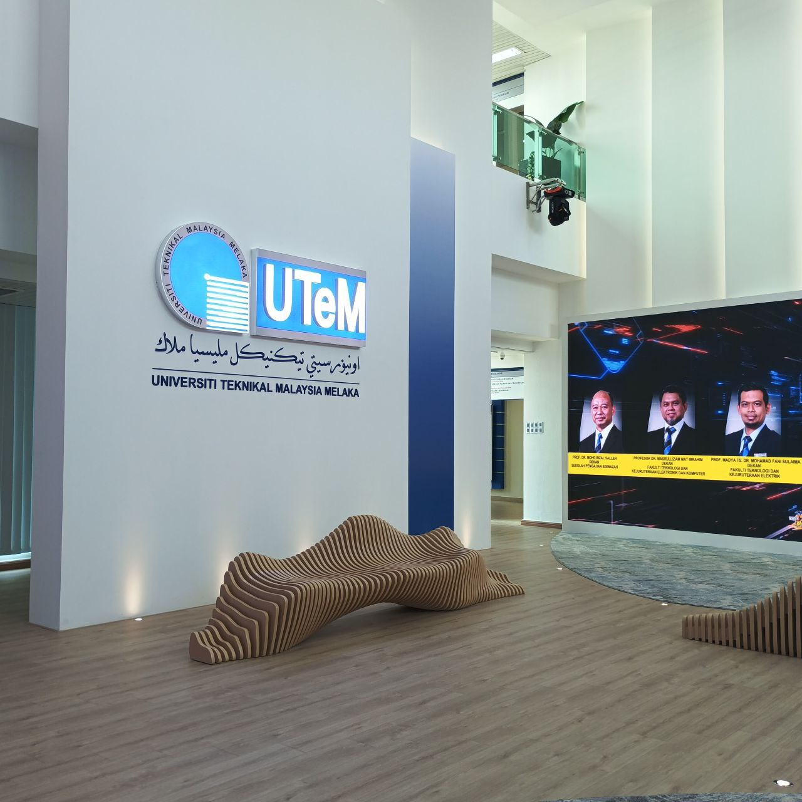

In July 2025, I underwent my industrial training at Universiti Teknikal Malaysia Melaka (UTeM).Throughout the internship, I gained various experiences and learned many valuable things. I was also able to apply the skills and knowledge that I learned at university during my internship.
Among the tasks I carried out during my internship were:
1. Filling in record disposal forms
2. Designing posters
3. Using Microsoft Excel to organize data